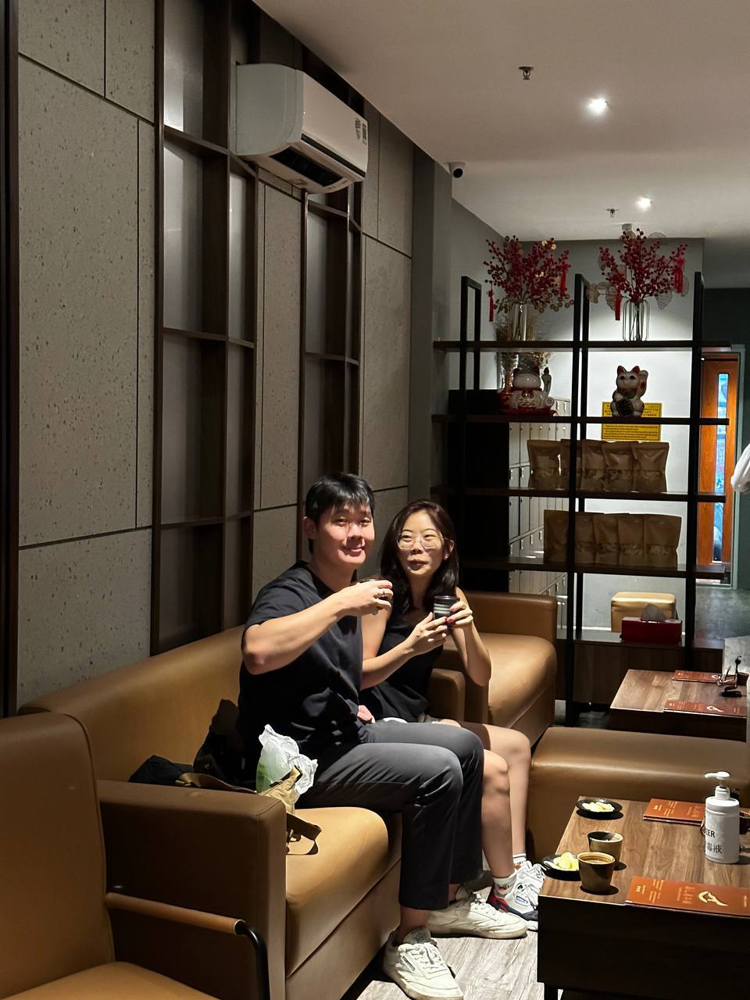
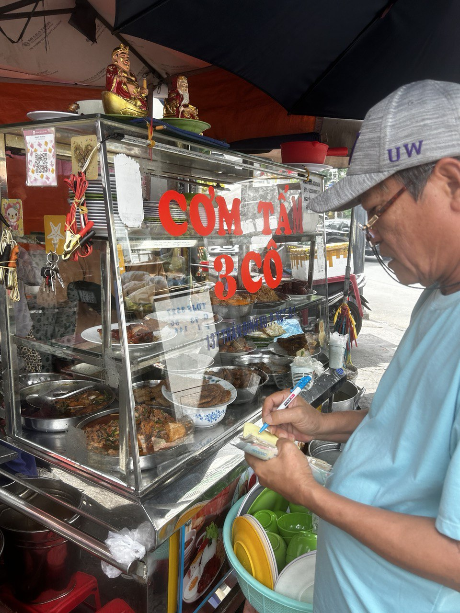
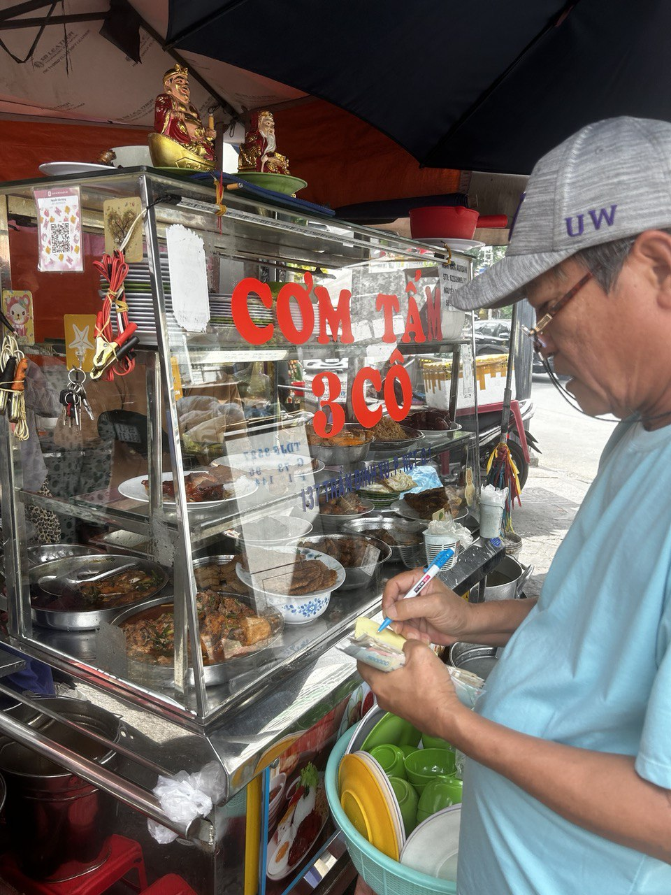

19th - 23rd December 2023
Vietnam🇻🇳 was a trip highly anticipated and raved by Wesley and Shao Ning.
It was the first time Shao Ning was travelling overseas🛬 with friends and Boyfriend👦 and Wesley's first full boy's trip🛉 with Girlfriend👸.
Wesley flew first on the 17th of December 2023 to 🇻🇳 as Shao Ning had prior plans with her family👪 but was cancelled due to unforeseen circumstances😞.
On the 19th, Shao Ning experienced flying✈ solo for the first time in her life to meet Wesley and pals at Ho Chi Minh City🇻🇳.
The following nights were as follows:
1st Night: Went for dinner at 4P Pizza🍕, Japan walking street🇯🇵 to walk off the coma and digest before heading for a Shiatsu massage💆.
Finally ended it off with 5KU grilled octopus🐙.

2nd Day: Went for coffee☕ run in the morning, before having eggs🥚 and bread🍞 for lunch.
We then walked around Takashimaya🏬 and Ben Thanh market🛍 after before going to Cafe Apartments🏢.
After, we headed to New Playgrounds to do some retail therapy🛍 before ending the day with dinner at BRO's BBQ🥩.
3rd Day: Headed out in the morning for snails🐌 before heading to do more retail therapy at Tobi Regular👕 street.
After, we headed to eat Piper LotLot🍖 before heading to the Vietnam War Musuem⚔🎪 for an insightful recap of history.
We then visited the supermarket🏪 before heading home to proceed with our Potluck dinner🍲 and Secret Santa🎅.
After our festive vibes dissipated, we then headed to Bui Vien for a drink🍺 accompied with balloon🎈 and a BBQ supper🍗.
4th Day: Went for a different breakfast this morning, Avocado Toast🍞 with Vietnamese Egg Coffee🥚☕.
After, went on to get Cow Organ Soup🍲 and dessert🍰 before heading to Banh Mi Hyunh Hoa to try the best Banh Mi🥪 in our lives.
One pal, Derrick forgot to bring his phone📱 the entire day and was lost while we were chilling in starbucks☕.
We then later met him at Gom Saigon which was a pottery place🏺.
For dinner, we had another potluck and ate Tang Yuan🍡 as it was Tang Yuan Festival.
After filling up, we then headed for a beer at a bar before going to LUSH🍷 to end the night and the trip.
 5th Day: Our final day in Vietnam🇻🇳 started with a local breakfast Com Tam🍚.
After which, we headed to the airport🛫 for our flight✈️ back home🏠.

5th Day: Our final day in Vietnam🇻🇳 started with a local breakfast Com Tam🍚.
After which, we headed to the airport🛫 for our flight✈️ back home🏠.
